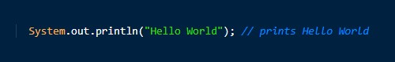

As we said earlier,computers only understand 0s and 1s.At the same time,humans are not usually able to express instructions,let alone complex programs only in )s and 1s, hence the need for higher level programming languages.We believe that the general ideas is that there is a third party in play,which meditates between computers and programmers.This party basically translates whatever instruction human write,into a language that computers understand(namely 0s and 1s).We call this process of translation,compilation and this "third party"compilers.
Basically, what compliers do boils down to translating from one language to another.So, in a typical programming language,the compiler would take the program you write in a higher level programming language, and translate that to 0s and 1s so that the computer can execute it. At the same time, comppilers do a through check of your codes to spot any possible mistakes and alert you before-hand.
Java is slightly different from typical programming languages,in that the code is not directly translated into code that is understood by machines. Java has an interesting selling point, in that programs that are written in Java designed to run on different machines(with different operating systems). There is even a motto that says "write once,run anywhere".Typically, with other programming languages, you'd end up writing a program for Windows, and then rewriting it in for another platform(such as Mac OS). As you understand,this is not very practical, as today There are at least 3-4 different operating systems(platforms) that users prefer to use, and having to write a copy of your program for each of them is not a trival task, especially if the program is complex, such as Microsoft Word.
In order to enable the "write once run anywhere" paradigm,Java introduces the concept of JVM(Java Virtual Machine).To put simply, this is a program that must be installed in your computer in order to run programs written in Java. Fortunately, most computers come with Java preinstalled, however it is very easy to install if not present.
In Java, it is the JVMs responsibility to abstract underlying operating system differences and intricacies and translate code to something that the specific machine can understand. Hence, when we compile our Java programs,we are not actually compiling them to 0s and 1s, rather to an intermediary language called byte code, that the JVM is able to understand and interpret it differently depending on the platform it is installed.
To summarize the above, there are three steps to be followed whenever we are writing any simple or complex programs:
At this step, we write the program in Java, using a simple editor(such as Notepad). Professional programmers usually use something more complex such as an IDE(Integrated Development Environment) to help them with repetitive tasks, however a simple editor should be more than enough for us.
At this step, we invoke the services of another program(the compiler) to translate our source code to byte code, so that the JVM can execute it.
After we've compiled the source code successfully,we tell the computer to execute the instructions using JVM.
Video lecture:
Video lecture:
If you have watched the video lecture ,you will see that there is already a program written there, which looks something like this:
This is our first , and very simple program, that does nothing more than print "Hello World". The console is a text box where the output of our program is printed and is named differently in different operating systems. For example in Windows, they call it Command Prompt where as in othere systems(such as Mac IOS) it is called Terminal The important thing to know is that this place from where we can run our programs,observe the output that is generated from our programs, and even provide input to them either before or during their execution.
There are two ways to call println with or without arguments.
"My original postulate, which I have been pursuing as a scientist all my life, is that one uses the criteria of correctness as a means of converging on a decent programming language design one which doesn’t set traps for its users, and ones in which the different components of the program correspond clearly to different components of its specification, so you can reason compositionally about it. [...] The tools, including the compiler, have to be based on some theory of what it means to write a correct program." Grace Hopper